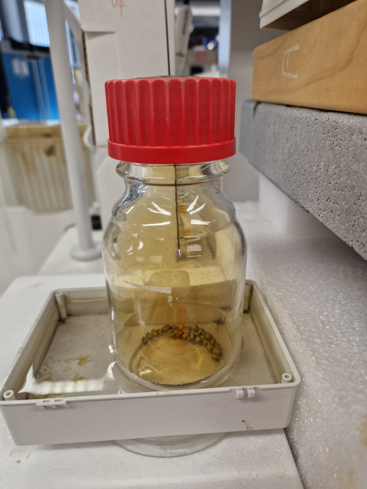
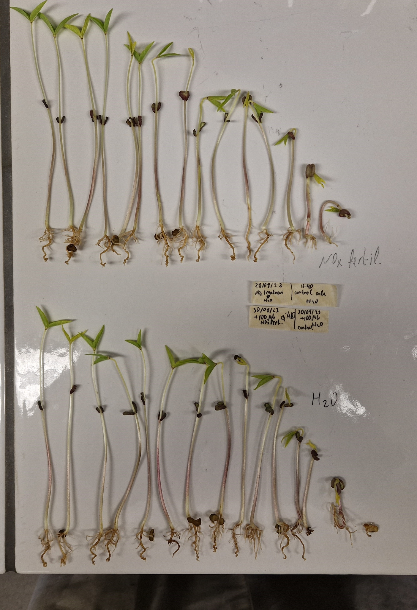
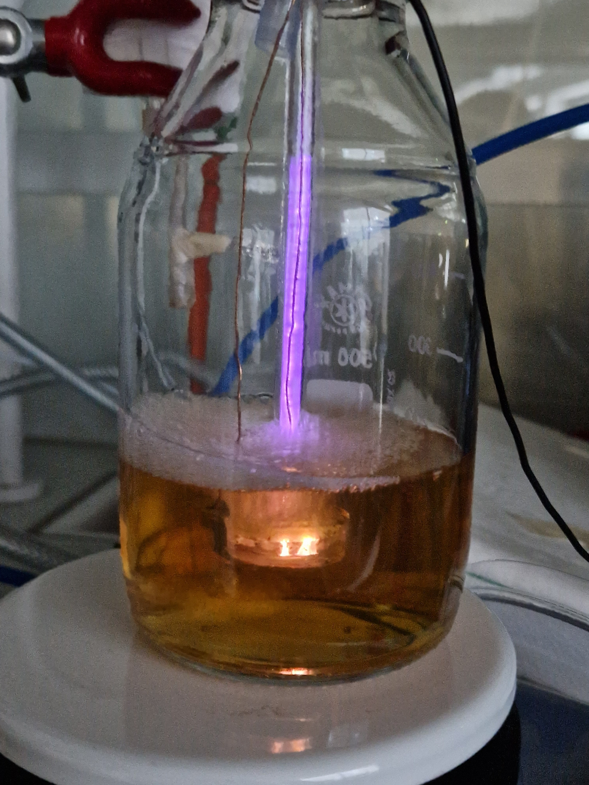
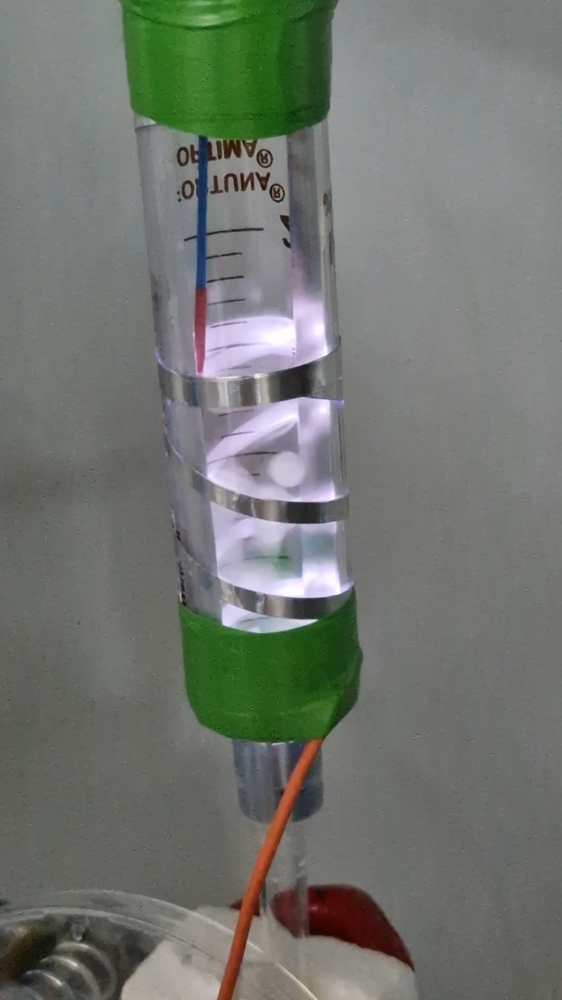
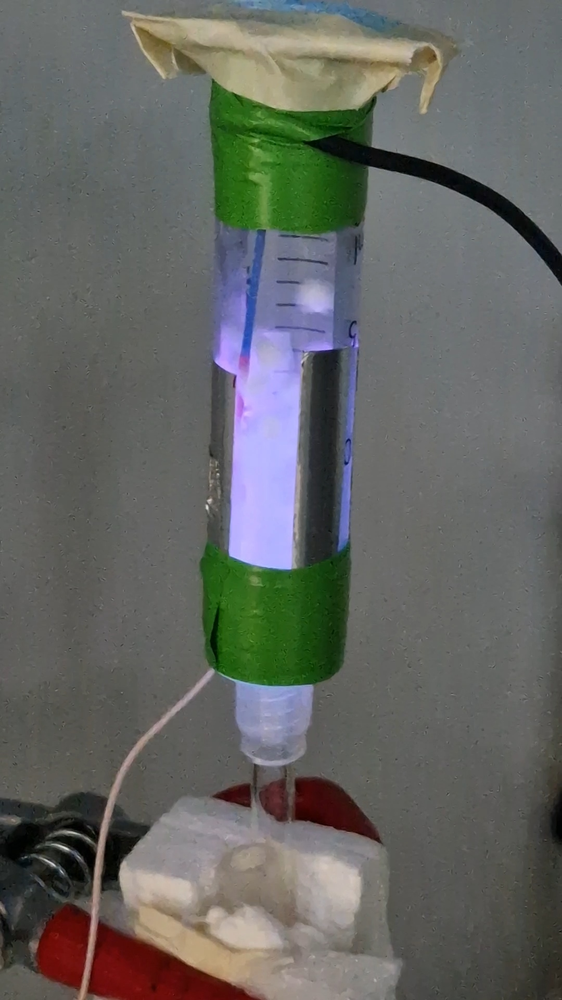
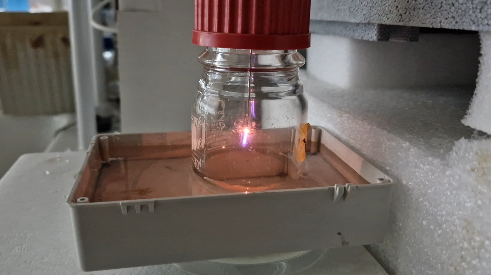

A focused domain of my experimental R&D profile, centered on plasma-related
processes, RF systems, pulsed electric fields, high-voltage prototyping,
process testing, and safety-aware experimental setup development.
Domain Scope
This domain includes plasma-related processes, RF systems, pulsed electric fields,
high-voltage prototyping, power-electronics blocks, driver circuits, oscillators,
impedance-matching concepts, electric-field-assisted treatments, process testing,
measurement, observation, and prototype-level experimental setup development.
It connects physical energy delivery, field coupling, process geometry, treatment
conditions, observable effects, stability, repeatability, and the practical search
for working experimental corridors under real laboratory constraints.
The focus is on selected experimental methods and prototype-level traces, not on
finalized devices or commercial systems.
Focus Areas
Plasma / RF Experimental Setups
Prototype-level work with plasma-related and RF-assisted experimental setups,
including field coupling, treatment geometry, surface interaction, and process
observation.
Work with pulsed electric field concepts, high-voltage treatment cells,
electric-field interactions, and possible applications in microbiological
or bio-related systems.
Status: in development / field-assisted treatment corridor.
Power Supply & Matching Blocks
Hands-on experience with laboratory-scale high-voltage and RF-related power blocks,
including power-supply topologies, driver circuits, oscillators, and impedance-matching
concepts for experimental setups.
Practical attention to voltage, current, temperature, timing, stability,
visible effects, repeatability, and the limits of early-stage experimental
interpretation.
Status: working observation layer / experimental validation support.
Example: Field-Assisted Experimental Setups
One recurring direction in this domain is the development and testing of
field-assisted setups, where electrical, RF, plasma-related, or pulsed
processes are connected with material or bio-related questions.
Positioning: these setups are presented as early-stage laboratory prototype
traces and working experimental corridors. They are not presented as finalized
devices, commercial systems, or complete engineering solutions.
Concrete Traces: Prototype-Level Setups
Malta Atmospheric-Plasma Setup Trace
In this work, I introduced and developed an initial atmospheric-plasma setup
and methodology, forming an early experimental corridor for plasma–water
interaction and bio-related treatment contexts.
This trace later connected with interdisciplinary work around
plasma-activated solutions, seed disinfection, and the SANITAS disinfectant
concept at the University of Malta.
This direction includes field-assisted experimental methods, including
RF-based setups used as supporting experimental infrastructure for materials
and coating-related work.
A related setup trace is documented in a published article:
view publication
.
Local Draft Visual Layer: RF Plasma, NOx, and Treated Media
This local draft layer connects the Field-Assisted Methods domain with selected
hands-on experimental traces: RF plasma exposure of mung bean seeds in an
air-derived NOx-containing atmosphere, transfer of plasma-generated nitrogen
oxides into water and soil media, plasma–liquid treatment observations,
plasma-assisted fluidization traces, and localized RF plasma vessel treatment.
Positioning:
these images are kept as a local review draft. The biological tests remained
preliminary: no clear difference was confirmed at the early stage, and full
statistical validation was not performed. The value of this layer is the
constructed experimental pathway, not a finalized seed-treatment or
sterilization claim.

RF plasma exposure of mung bean seeds in an air-derived NOx-containing atmosphere.

Preliminary treated/control seedling comparison; no clear biological difference was confirmed.

Plasma–liquid discharge experiment for field-assisted treatment of liquid media.

Plasma-assisted fluidization trace: dynamic sample exposure under field-assisted treatment conditions.

Localized plasma interaction during plasma-assisted fluidized sample treatment testing.

Localized RF plasma treatment trace inside a vessel, kept as a public method-level visual.
This domain connects directly with
Functional Materials & Nanomaterial Systems,
especially where plasma or field-assisted methods are used for surface treatment,
activation, or nanomaterial synthesis.
It also connects with AI-assisted R&D Workflows,
where experimental conditions, observations, failures, setup iterations, and
process traces can be structured and preserved.